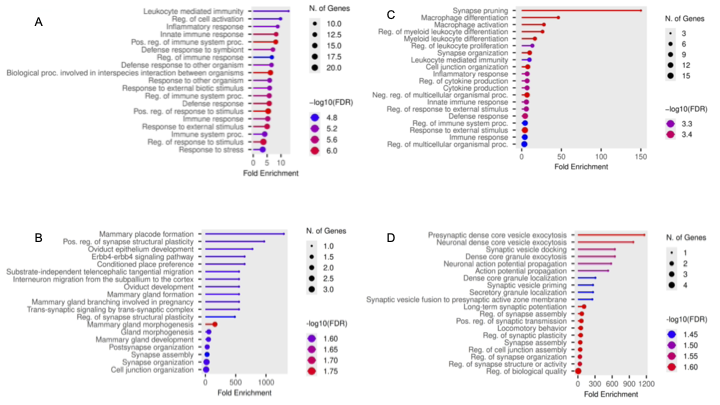
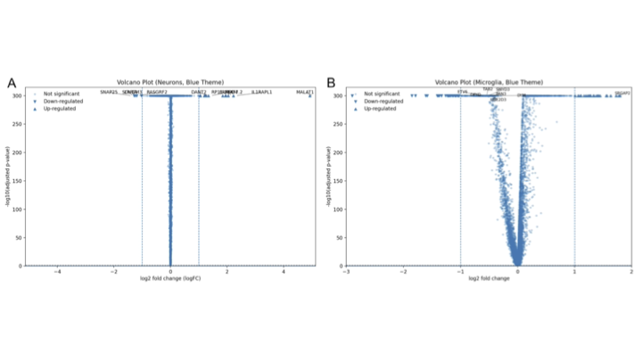
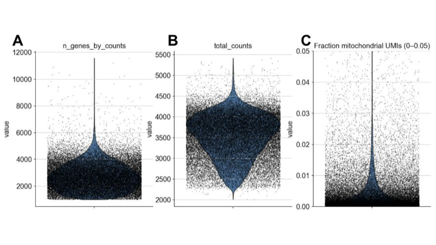
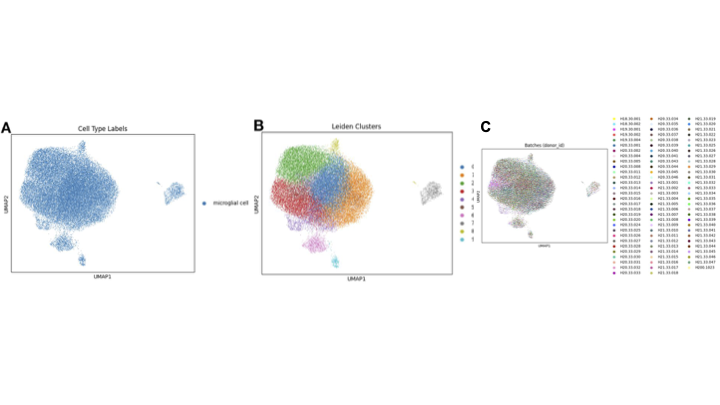
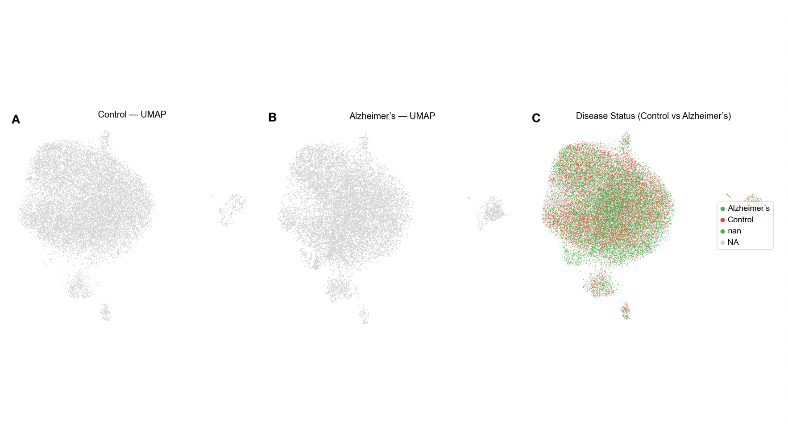

Immune pathways are enriched
Upregulated microglial genes show enrichment in immune-related pathways, including leukocyte-mediated immunity and innate immune response.

Single-cell RNA sequencing analysis
A structured research hub for the manuscript analyzing microglial transcriptional resilience and immune pathway activity in the middle temporal gyrus, with comparisons across Alzheimer’s and Parkinson’s disease contexts.
Research Question
Hypothesis
Microglia maintain cellular integrity in the Middle Temporal Gyrus in neurodegeneration, but still show immune pathway activation.
The manuscript frames Alzheimer’s and Parkinson’s disease as neurodegenerative disorders with cell-type-specific transcriptional changes. It focuses on microglia in the middle temporal gyrus, a region relevant to semantic memory and early amyloid deposition, to determine whether disease produces broad reprogramming or regional resilience.
The site organizes the manuscript around three scientific layers: biological context, computational evidence, and interpretive findings. This makes the work easier to scan for reviewers, mentors, and readers who want to move from hypothesis to data to conclusions.
Core Findings
Upregulated microglial genes show enrichment in immune-related pathways, including leukocyte-mediated immunity and innate immune response.
Neuronal gene set enrichment highlights synaptic plasticity, vesicle docking, exocytosis, transport, and action potential propagation.
Microglial cells average 2,706 detected genes and 3,538 UMIs per cell, with mitochondrial UMI fraction far below the exclusion threshold.
Leiden clustering and UMAP visualization indicate transcriptionally distinct microglial subtypes with donor overlap across the dataset.
Evidence Architecture
Upregulated gene sets emphasize immune activation, while downregulated sets point to impaired cytokine and leukocyte regulation.
Neuron-enriched pathways connect disease stress to synaptic plasticity, vesicle docking, neurotransmitter transport, and exocytosis.
Microglial volcano analysis shows broader differential expression than neurons, including genes connected to inflammatory signaling and cell connectivity.
Neuronal volcano plots show limited gene alteration, with manuscript examples including MALAT1, IL1RAPL1, DANT2, SNAP25, and RASGRF2.
Cells were evaluated using n_genes_by_counts, total_counts, and mitochondrial UMI fraction to remove low-quality observations.
Dimensionality reduction and Leiden clustering identify ten microglial subtypes and show donor-level overlap after integration.
Figure 1
GO Biological Process enrichment separates immune pathway activity in microglia from synaptic and transport pathway changes in neurons.
Open original PDF
Figure 2
The original volcano figure is paired with an interactive Plotly view of highlighted gene/protein markers. Hover over a point in the Plotly chart to see its marker name, cell type, regulation direction, and approximate plotted values.
Open original PDF
Interactive Volcano
Neuron and microglia markers are shown as separate interactive volcano plots. Hover over any dot to see the gene name, cell type, regulation direction, and approximate plotted values.
Logical Representation
Alzheimer’s disease, Parkinson’s disease, and control comparisons establish the neurodegenerative frame.
Microglia and neurons are analyzed independently so immune and synaptic mechanisms are not collapsed into one summary.
GSEA, differential expression, QC, clustering, annotation, and disease-control UMAP views each answer a different question.
The final synthesis argues that MTG microglia preserve structural and transcriptional stability while showing immune activation signatures.
Methods
Public single-cell RNA-seq data from middle temporal gyrus microglia, including more than 40,000 cells and 36,412 expressed genes.
Cells were filtered using duplicated UMI removal, detected gene counts, total UMI counts, and mitochondrial UMI fraction.
GO Biological Process enrichment was performed using ranked differential expression statistics and an FDR cutoff of 0.05.
Preprocessing, highly variable gene selection, dimensionality reduction, Leiden clustering, and donor integration were used to visualize subtype structure.
Analysis Pipeline
SEA-AD and CellxGene microglial transcriptomes.
Filter with detected genes, total UMIs, and mitochondrial fraction.
Differential expression and volcano visualization by cell type.
GO Biological Process GSEA with FDR-based filtering.
Scanpy, HVGs, UMAP, Leiden clustering, and donor integration.
Control versus Alzheimer’s microglial state interpretation.
Figure 3
Violin plots summarize detected genes, total UMIs, and mitochondrial UMI fraction for MTG microglial cells.
Open original PDF
Figure 4
UMAP and Leiden clustering show donor distributions, microglial identity confirmation, and ten microglial subtypes.
Open original PDF
Figures
Immune, synaptic, differentiation, and exocytosis pathway comparisons.
Gene-level differential expression in neurons and microglia.
Detected genes, total UMIs, and mitochondrial UMI fraction.
UMAP clustering, donor integration, and subtype labels.

Control, Alzheimer’s, and combined disease-status microglial distributions.
Manuscript
Use this PDF as the source manuscript file. The surrounding website provides a public-facing data architecture and reader-friendly interpretation of the study.
Download ManuscriptReferences